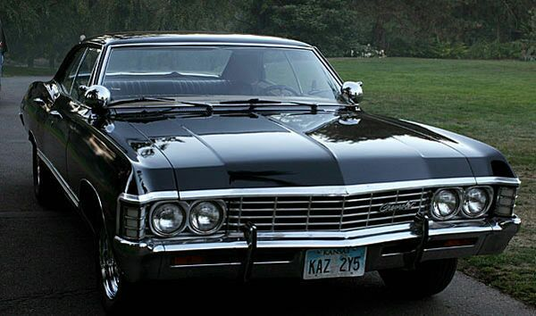

Chevrolet Impala 1967

Veja mais
No mesmo ano, o Impala ganhava uma versão esportiva chamada SS, versão de mesmo nome tendo sido aplicada no Opala vendido aqui no Brasil. Com pequenas diferenças estéticas em relação ao modelo comum, o Impala SS 67 tinha como um dos seus atributos estéticos, uma faixa preta, que ganhava a inscrição SS. O modelo também chegou a ser usado como carro de polícia nas versões normais, que era extremamente valente para perseguir os bandidos do final dos anos 60.
Veja mais